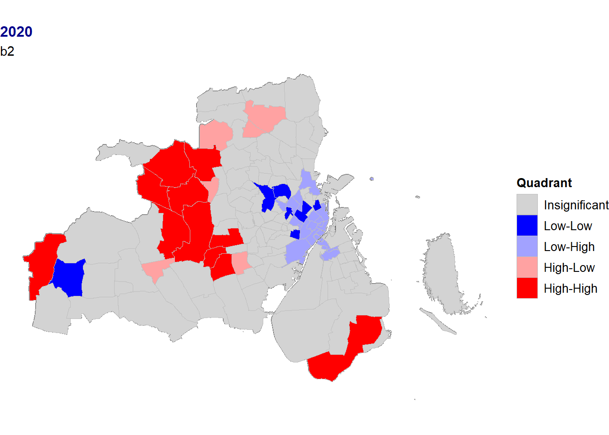

Chapter 3 Capital region
Migration in the capital region. Spatial patterns (Georgati and Keßler (2021)) and links with house prices.
# Communes polygons of Denmark, and select those in the study area
dk_country <- st_union(dk_muni)
# Codes of the communes under study
capital_region_muni <- c("København",
"Frederiksberg",
"Albertslund",
"Ballerup",
"Brøndby",
"Dragør",
"Gentofte",
"Gladsaxe",
"Glostrup",
"Herlev",
"Høje-Taastrup",
"Hvidovre",
"Ishøj",
"Lyngby-Taarbæk",
"Rødovre",
"Tårnby",
"Vallensbæk")
# Select municipalities under study
capital_muni <- dk_muni %>% filter(muni_name %in% capital_region_muni)
dk_country_crop <- st_crop(dk_country, capital_muni)
# Parishes polygons of Denmark, and select those in the study area
prsh_link <- paste(loc_dir,
"DAGIREF_SHAPE_UTM32-EUREF89/ADM",
"SOGN.shp",
sep = "/")
dk_prsh <- read_sf(prsh_link) %>%
st_zm() %>%
st_transform(crs = "EPSG:25832")
# Select those where the centroid is in the capital region
dk_prsh_cent <- st_centroid(dk_prsh)
capital_prsh_cent <- st_intersection(dk_prsh_cent, capital_muni)
capital_prsh <- dk_prsh %>%
# Get parishes in the capital region
filter(SOGNEKODE %in% capital_prsh_cent$SOGNEKODE) %>%
# Combine several parish features geometries into one polygon
group_by(SOGNEKODE, SOGNENAVN) %>%
summarise(geometry = st_union(geometry)) %>%
ungroup() %>%
# add area of the parish (in km2)
mutate(prsh_area_km2 = as.numeric(units::set_units(st_area(.), km^2))) %>%
# Translate column names
rename(prsh_id = SOGNEKODE,
prsh_name = SOGNENAVN)
# Contour of the capital region (merge the parishes in one polygon):
capital_area <- capital_prsh %>%
st_union() %>%
st_sf() %>%
st_transform(crs = "EPSG:25832")ggplot() +
geom_sf(data = capital_prsh, fill = "grey", color = "grey50", size = 0.05) +
geom_sf(data = capital_muni, fill = NA, color = "black", size = 0.5) +
my_theme_map() +
annotation_scale(location = "br", text_cex = 1) +
annotation_north_arrow(location = "br",
pad_x = unit(2, "cm"),
pad_y = unit(0.65, "cm"),
which_north = "true",
height = unit(0.5, "cm"),
width = unit(0.5, "cm"),
style = north_arrow_orienteering(text_col = "white",
text_size = 1))
Figure 3.1: Parishes in the Capital region
3.1 Population data
Population data at parish level was uploaded from Denmark Statistics: Tables:
- KMSTA001: Population 1. January by parish, ancestry and National Church.
- KMSTA003: Summary vital statistics by parish and movements.
## Auxiliary functions for reading the data with the package *danstat*
# Loop by year for getting DST data
steps <- function(year){
var_values <- list(id_region, id_ancestry, year)
var_input <- purrr::map2(.x = var_codes,
.y = var_values,
.f = ~list(code = .x, values = .y))
get_data(id_table, variables = var_input)
}
# Function for removing punctuation, lowercase, stem, stopwords, and collapse strings
rm_words <- function(x, stopwords) { x %>%
strsplit(" ", fixed = TRUE) %>%
lapply(tm::removePunctuation) %>%
lapply(tolower) %>%
lapply(SnowballC::wordStem) %>%
lapply(function(x) x[!x %in% stopwords]) %>%
vapply(function(x) paste(x , collapse = "_"), character(1))
}## Read and clean table KMSTA001
# Table
id_table <- "KMSTA001"
var_pop <- get_table_metadata(table_id = id_table, variables_only = TRUE)
# Codes for var_input
var_codes <- c("SOGN", "HERKOMST", "Tid")
# Values for var_input
# Region: parishes of the study area (i.e. capital_parish)
id_region <- capital_prsh$prsh_id
# Ancestry
id_ancestry <- NA
# Quarters
id_year <- var_pop$values[[4]]$id[1:12] # Select 2008-2019
# Read data (n parallel)
plan(multisession, workers = 7)
capital_prsh_ancestry_read <- id_year %>%
future_map_dfr(steps)
plan("default")
# Clean data
capital_prsh_ancestry <- capital_prsh_ancestry_read %>%
# Translate column names into English
rename(parish = SOGN,
ancestry = HERKOMST,
year = TID,
value = INDHOLD) %>%
# Get parish codes, names, and municipality names
separate(parish,
c("prsh_id", "prsh_name", "muni_name"),
sep = " ",
extra = "drop") %>%
mutate(muni_name = gsub("\\(", "", muni_name)) %>%
# Make shorter names in ancestry
mutate(ancestry = case_when(
ancestry == "Persons of Danish origin" ~ "pop_dan",
ancestry == "Immigrants from western countries" ~ "pop_mi_wst",
ancestry == "Immigrants from non-western countries" ~ "pop_mi_nwst",
ancestry == "Descendants from western countries" ~ "pop_de_wst",
ancestry == "Descendants from non-western countries" ~ "pop_de_nwst"),
ancestry = factor(ancestry)) %>%
# Pivot (one row for peach parish and year)
pivot_wider(names_from = ancestry, values_from = value) %>%
# Merge immigrants and their descendants (i.e. foreigners)
mutate(pop_frgn_wst = pop_mi_wst + pop_de_wst,
pop_frgn_nwst = pop_mi_nwst + pop_de_nwst) %>%
select(-c(pop_mi_wst, pop_de_wst, pop_mi_nwst, pop_de_nwst)) %>%
# Add column with total population
mutate(pop_total = select(., starts_with("pop_")) %>% rowSums()) %>%
# Put NA when pop_* is 0
mutate(across(starts_with("pop"), ~ifelse(.x == 0, NA, .x)))
# Add the spatial information:
capital_prsh_ancestry_sf <- capital_prsh %>%
select(prsh_id, prsh_area_km2) %>%
left_join(capital_prsh_ancestry, by = c("prsh_id")) %>%
# Population density
mutate(across(starts_with("pop"), ~.x/prsh_area_km2, .names = "{.col}_km2"))## Read and clean table KMSTA003
# Table
id_table <- "KMSTA003"
var_pop <- get_table_metadata(table_id = id_table, variables_only = TRUE)
# Codes for var_input
var_codes <- c("SOGN", "KIRKEBEV", "Tid")
# Values for var_input
# Region: all parish
id_region <- capital_prsh$prsh_id
# Ancestry
id_movements <- NA
# Quarters
id_year <- var_pop$values[[3]]$id[1:5] # data from 2015 to 2019
# Read data
plan(multisession, workers = 7)
capital_prsh_stats_read <- id_year %>%
future_map_dfr(steps)
plan("default")
# Clean data
capital_prsh_stats <- capital_prsh_stats_read %>%
# Translate column names into English
rename(parish = SOGN,
movements = KIRKEBEV,
year = TID,
value = INDHOLD) %>%
# Get parish codes, names, and municipality names
separate(parish,
c("prsh_id", "prsh_name", "muni_name"),
sep = " ",
extra = "drop") %>%
mutate(muni_name = gsub("\\(", "", muni_name)) %>%
# Clean arguments in movements (remove punctuation, stop-words, stem, and collapse)
mutate(movements = rm_words(movements, c("in", "the", "of"))) %>%
# Pivot (one row for each parish and year)
pivot_wider(names_from = movements, values_from = value)
## Merge both datasets in one
capital_prsh_pop <- capital_prsh_ancestry %>%
full_join(capital_prsh_stats) %>%
# remove rows with NAs
drop_na()
## Add the spatial information:
capital_prsh_pop_sf <- capital_prsh %>%
select(prsh_id, prsh_area_km2) %>%
left_join(capital_prsh_pop, by = c("prsh_id")) 3.1.1 Spatial distribution
Where people live in the capital region (by parish), and their change from 2008 to 2019:
# Estimate population in percentage
capital_prsh_ancestry_sf <- capital_prsh_ancestry_sf %>%
group_by(year) %>%
mutate(across(.cols = c(pop_dan, pop_frgn_wst, pop_frgn_nwst, pop_total),
.fns = ~ 100 * .x / pop_total,
.names = "{.col}_pct")) %>%
ungroup()# Aux. function for plotting
plot_ppl_pct <- function(pop) {
capital_prsh_ancestry_sf %>%
ggplot() +
geom_sf(data = dk_country_crop, fill = "grey") +
geom_sf(aes(fill = {{ pop }} ), color = "grey", size = 0.05) +
scale_fill_viridis(name = "Percentage",
option = "magma",
direction = -1,
limits = c(0, 100)
) +
geom_sf(data = capital_muni, fill = NA, color = "white", size = 0.1) +
my_theme_map() +
facet_wrap( ~year, ncol = 3)
}plot_ppl_pct(pop_dan_pct)Figure 3.2: Population distribution of Danes
plot_ppl_pct(pop_frgn_nwst_pct)
Figure 3.3: Population distribution of non-Western residents
plot_ppl_pct(pop_frgn_wst_pct)Figure 3.4: Population distribution of Western residents
# Create classes
bi_data <- capital_prsh_ancestry_sf %>%
drop_na() %>%
group_by(year) %>%
bi_class(x = pop_dan_pct,
y = pop_frgn_nwst_pct,
style = "quantile",
dim = 3) %>%
ungroup() %>%
st_sf()
# Create map
p1 <- ggplot() +
geom_sf(data = dk_country_crop, fill = "grey") +
geom_sf(data = bi_data,
mapping = aes(fill = bi_class),
size = 0.05,
show.legend = FALSE) +
geom_sf(data = capital_muni, fill = NA, color = "white", size = 0.1)+
bi_scale_fill(pal = "DkBlue", dim = 3) +
my_theme_map() +
facet_wrap(~year, ncol= 3)
# Create legend
p_legend <- bi_legend(pal = "DkBlue",
dim = 3,
xlab = "Danes\n(%)",
ylab = "Non-wst\n(%)",
size = 8)
# Plot
layout <- "
AAAAAA#
AAAAAA#
AAAAAA#
AAAAAA#
AAAAAAB
"
p1 + p_legend + plot_layout(design = layout)Figure 3.5: Population distribution of Danes vs. Non-western residents
# Create classes
bi_data <- capital_prsh_ancestry_sf %>%
drop_na() %>%
group_by(year) %>%
bi_class(x = pop_dan_pct,
y = pop_frgn_wst_pct,
style = "quantile",
dim = 3) %>%
ungroup() %>%
st_sf()
# Create map
p1 <- ggplot() +
geom_sf(data = dk_country_crop, fill = "grey") +
geom_sf(data = bi_data,
mapping = aes(fill = bi_class),
size = 0.05,
show.legend = FALSE) +
geom_sf(data = capital_muni, fill = NA, color = "white", size = 0.1)+
bi_scale_fill(pal = "DkBlue", dim = 3) +
my_theme_map() +
facet_wrap(~year, ncol= 3)
# Create legend
p_legend <- bi_legend(pal = "DkBlue",
dim = 3,
xlab = "Danes\n(%)",
ylab = "Wst\n(%)",
size = 8)
# Plot
layout <- "
AAAAAA#
AAAAAA#
AAAAAA#
AAAAAA#
AAAAAAB
"
p1 + p_legend + plot_layout(design = layout)Figure 3.6: Population distribution of Danes vs. Western residents
# Create classes
bi_data <- capital_prsh_ancestry_sf %>%
drop_na() %>%
group_by(year) %>%
bi_class(x = pop_frgn_nwst_pct,
y = pop_frgn_wst_pct,
style = "quantile",
dim = 3) %>%
ungroup() %>%
st_sf()
# Create map
p1 <- ggplot() +
geom_sf(data = dk_country_crop, fill = "grey") +
geom_sf(data = bi_data,
mapping = aes(fill = bi_class),
size = 0.05,
show.legend = FALSE) +
geom_sf(data = capital_muni, fill = NA, color = "white", size = 0.1)+
bi_scale_fill(pal = "DkBlue", dim = 3) +
my_theme_map() +
facet_wrap(~year, ncol= 3)
# Create legend
p_legend <- bi_legend(pal = "DkBlue",
dim = 3,
xlab = "Non-wst\n(%)",
ylab = "Wst\n(%)",
size = 8)
# Plot
layout <- "
AAAAAA#
AAAAAA#
AAAAAA#
AAAAAA#
AAAAAAB
"
p1 + p_legend + plot_layout(design = layout)
Figure 3.7: Population distribution of Non-Western vs. Western residents
There are missing data form some parishes (i.e. mainly in Copenhagen City and from 2011-2015; Figure ??). (TRYE to estimate values in this parishes?? e.g. base on the population at municipality and the total number of residential dwellings in each parish…..??)
# population at municipality level (at the first day of the year)
capital_muni_pop_sf <- dk_muni_pop %>%
# Get population at the first day of the year
filter(muni_name %in% capital_region_muni) %>%
separate(date, c("year", "month", "day")) %>%
filter(month == "01")
capital_muni_pop_sf %>%
filter(ancestry == "Total") %>%
ggplot() +
geom_sf(data = dk_country_crop,
fill = "grey") +
geom_sf(aes(fill = pop_km2)) +
scale_fill_viridis(name = "ppl/km2",
option = "magma",
direction = -1,
trans = "log10") +
geom_sf(data = capital_muni, fill = NA, color = "white", size = 0.05) +
my_theme_map() +
facet_wrap( ~year, ncol = 3)Figure 3.8: Population density at municipality level
3.1.2 Autocorrelation (Moran I)
Local spatial autocorrelation. Define neighbours polygons and weights:
# Based on:
# https://mgimond.github.io/simple_moransI_example/
# https://rpubs.com/quarcs-lab/spatial-autocorrelation
library(spdep)
# Local Moran index
f_local_moran <- function(year,
variable,
df = capital_prsh_ancestry_sf,
signif = 0.15) {
# Polygons
s <- df %>%
# Select
filter(year == {{ year }}) %>%
drop_na() %>%
st_sf()
# Variable
x <- s %>%
# Variable
pull( {{ variable }})
# Plot MI
xp <- x %>%
# Local Index
localmoran_perm(listw = nb2listw(poly2nb(s, queen = TRUE),
style = "W",
zero.policy = TRUE),
nsim = 999) %>%
as_tibble() %>%
dplyr::rename(p.value = `Pr(z > 0)`) %>%
# binds results to our polygon shapefile
cbind(s) %>%
st_sf() %>%
# center the variable of interest around its mean
mutate(m_qualification = x - mean( x ),
m_local = Ii - mean(Ii)) %>%
# Build quadrant
mutate(quadrant = case_when(m_qualification > 0 & m_local > 0 ~ 4,
m_qualification < 0 & m_local < 0 ~ 1,
m_qualification < 0 & m_local > 0 ~ 2,
m_qualification > 0 & m_local < 0 ~ 3),
quadrant = ifelse(p.value > signif, 0, quadrant)) %>%
mutate(quadrant = factor(quadrant,
levels = c(0, 1, 2, 3, 4),
labels = c("Insignificant",
"Low-Low",
"Low-High",
"High-Low",
"High-High")))
xp %>%
# Plot quadrants (LISA)
ggplot() +
geom_sf(data = capital_prsh, fill = "black") +
geom_sf(aes(fill = quadrant), color = "grey", size = 0.05) +
scale_fill_manual(name = "Quadrant" ,
values = c("lightgrey",
"#0000FF",
"#A2A2FF",
"#FFA2A2",
"#FF0000"),
drop = FALSE) +
labs(title = {{ year }},
subtitle = {{ variable }}) +
my_theme_map()
}
# Plot maps
p <- map2(.x = rep(2008:2019, times = 1, each = 3),
.y = rep(c("pop_dan_pct", "pop_frgn_wst_pct", "pop_frgn_nwst_pct"), 12),
~f_local_moran(.x, .y))
wrap_plots(p, ncol = 3) + plot_layout(guides = "collect")Figure 3.9: Local Moran index (p-value < 0.15)
3.1.3 Ternary plots
PROBLEMS WITH GGTERN (ggtern is´not compatible with the new version of ggplot2) - Plot in another project and put here the results
3.2 House prices at parish level
W have used all residences for year-round living (ENH_ANVEND_KODE) (i.e. from the Building and Dwelling Register - BBR. We remove from the dataset, however, those dwellings that are not actually used for residential purpose (i.e. BOLIGTYPE_KODE \(\neq\) E - Andet (bl.a. institutioner og erhverv) or BOLIGTYPE_KODE \(\neq\) 5 - Sommer-/fritidsbolig) and dwellings with a size lower than that 10 \(m^2\). We also focus our analysis to the main building types in the City of Copenhagen, which are in this order: i) multi-storey residential buildings (code 140), ii) detached single-family houses (codes 120, 121, 122), and iii) semi-detached houses (codes 130, 131, 132). Colleges were excluded from the data analysis since they are a special type of buildings dedicated to students residences mainly outside of the free marked.
We also select from the main residential buildings those that are on the ordinary free trade (OVERDRAGELSES_KODE == 1 - Almindelig frit salg) or public sales (OVERDRAGELSES_KODE == 3 - Auktion), since these values represent what people are willing to pay for own a property. Finally, we adjusted the housing prices to 2019 prices and estimated the price per square meter (\(kDDK/m^2\)) by dividing the 2019 adjusted prices and the size of the dwelling (BEBO_ARL). Inconsistent values have been removed; i.e. 2019 adjusted prices = 0 kDKK.
# Buildings for year round living
res_codes <- tribble (~ENH_ANVEND_KODE, ~type,
120, "Single-family house",
121, "Single-family house",
122, "Single-family house",
130, "Semi-detached house",
131, "Semi-detached house",
132, "Semi-detached house",
140, "Multi-storey") %>%
# Convert type to factor
mutate(type = factor(type)) %>%
# Convert to data.table
as.data.table()
# Function for reading residential units in the study area from a BBR files (.csv):
f_runits_oft_capital <- function(.file, .muni = study_area_codes) {
fread(.file) %>%
# Select only Residential houses - Buildings for year-round living
filter.(ENH_ANVEND_KODE %in% res_codes$ENH_ANVEND_KODE) %>%
# Format KomKode and select municipalities of the study area
mutate.(KomKode = paste0("0", KomKode)) %>%
filter.(KomKode %in% .muni) %>%
# Remove residential units not used for residential purpose
filter.(BOLIGTYPE_KODE != "E" | BOLIGTYPE_KODE != "5") %>%
# Remove tiny dwellings (area < 10 m2)
filter.(BEBO_ARL >= 10) %>%
# Add year of the BBR dataset
mutate.(year = parse_number(stringr::str_extract(.file, "_[0-9]+_"))) %>%
# Convert house price (KONTANT_KOEBESUM) to numeric and kDKK
mutate.(price_kDKK = KONTANT_KOEBESUM / 1000,
price_kDKK = as.numeric(price_kDKK)) %>%
# Drop unused factors levels
droplevels() %>%
# ordinary free trade or auction
filter.(OVERDRAGELSES_KODE == "1" | OVERDRAGELSES_KODE == "3") %>%
# Remove prices > 0 kDKK
filter.(price_kDKK > 0) %>%
# 2019 adjusted house prices
left_join.(price_index, by = c("year" = "index_year")) %>%
mutate.(index_2019 = price_index_2019$index_value,
price_2019_kDKK = (price_kDKK * index_2019 / index_value),
price_2019_kDKK_m2 = price_2019_kDKK / BEBO_ARL)
}
# Load residential units (from .csv files)
# NOTE: you may need to change the path to your file on "OneDrive - Aalborg Universitet"
csv_files_path <- list.files(path = Sys.getenv("OneDrive_BBR_path"),
pattern = "*.csv",
full.names = TRUE)
study_area_codes <- capital_muni$muni_id
plan(multisession, workers = 7)
runits_oft_capital_read <- future_map_dfr(.x = csv_files_path,
.f = f_runits_oft_capital)
plan("default")# Clean dataset
runits_oft_capital <- runits_oft_capital_read %>%
# Input empty cells in Etagebetegn (buildings with only one floor) as "st"
mutate.(Etagebetegn = fifelse(Etagebetegn == "", "st", Etagebetegn)) %>%
# Etagebetegn as ordered factor
mutate.(Etagebetegn = factor(Etagebetegn,
c("k2", "kl", "st", seq(1, 36, 1)),
ordered = TRUE)) %>%
# Group floor levels with 5 or more
mutate.(floor_level = fct_other(Etagebetegn,
drop = factor(seq(5, 36)),
other_level = "5 or more")) %>%
# Add residential description (type) into the dataset
left_join.(res_codes, by = "ENH_ANVEND_KODE") %>%
# Convert columns with codes (*_KODE) to character
mutate.(across.(ends_with("KODE"), ~as.character(.)))
# Convert to sf objects and add population data by ancestry
plan(multisession, workers = 7)
runits_oft_capital_sf <- runits_oft_capital %>%
# Convert to sf object
st_as_sf(coords = c("etrs89koordinat_ost",
"etrs89koordinat_nord"),
crs = "EPSG:25832") %>%
# Detect to what parish belongs a house
group_split(year) %>%
future_map_dfr(., ~st_join(., capital_prsh, join = st_nearest_feature),
.options = furrr_options(seed = 123))
plan("default")The total number of residential units used for the analysis is therefore 342227 (Table 3.1).
# Table with Number of residential units
runits_oft_capital_sf %>%
as_tibble() %>%
# Summarize by type or residency and year
group_by(type, year) %>%
summarise(n = n()) %>%
ungroup() %>%
# Arrange and add row with totals
arrange(year, desc(n)) %>%
# Pivot
pivot_wider(names_from = year, values_from = n) %>%
adorn_totals("row") %>%
kbl(caption = "Number of residential dwellings in the free trade by year") %>%
kable_paper() %>%
row_spec(4, bold = TRUE) %>%
scroll_box(width = "100%")| type | 2004 | 2005 | 2006 | 2007 | 2008 | 2009 | 2010 | 2011 | 2012 | 2013 | 2014 | 2015 | 2016 | 2017 | 2018 | 2019 | 2020 |
|---|---|---|---|---|---|---|---|---|---|---|---|---|---|---|---|---|---|
| Multi-storey | 16314 | 19448 | 17940 | 15528 | 9168 | 6634 | 18887 | 11025 | 13820 | 13146 | 15475 | 17109 | 15330 | 16754 | 15720 | 16328 | 12628 |
| Single-family house | 3687 | 3672 | 2758 | 2818 | 2423 | 2138 | 3944 | 2735 | 3240 | 3191 | 3499 | 3958 | 3605 | 4000 | 3700 | 3780 | 3849 |
| Semi-detached house | 1658 | 1786 | 1957 | 1784 | 1465 | 1019 | 2064 | 1567 | 1672 | 1695 | 1862 | 2318 | 2837 | 2921 | 2944 | 2140 | 2287 |
| Total | 21659 | 24906 | 22655 | 20130 | 13056 | 9791 | 24895 | 15327 | 18732 | 18032 | 20836 | 23385 | 21772 | 23675 | 22364 | 22248 | 18764 |
The summary descriptive statistics of the housing prices are:
# Create variable labels of the variables to be printed in the table
labelled::var_label(runits_oft_capital_sf$price_2019_kDKK) <- "Adjusted prices (kDKK)"
labelled::var_label(runits_oft_capital_sf$BEBO_ARL) <- "Dwelling size (m2)"
labelled::var_label(runits_oft_capital_sf$price_2019_kDKK_m2) <- "Adjusted prices per square meter (kDKK/m2)"
library(tidyverse)
library(gtsummary)
# Summary table
temp <- as_tibble(runits_oft_capital_sf)
temp %>%
# Select variables of interest
select(type, price_2019_kDKK, BEBO_ARL, price_2019_kDKK_m2) %>%
# Summary values
tbl_summary(by = type,
type = all_continuous() ~ "continuous2",
statistic = all_continuous() ~ c("{mean}",
"{median}",
"{p25} - {p75}",
"{min} - {max}"),
missing = "no") %>%
add_overall() %>%
modify_spanning_header(c("stat_1", "stat_2", "stat_3") ~ "**House type**") %>%
modify_footnote(update = everything() ~ NA) %>%
bold_labels() | Characteristic | Overall, N = 342,227 | House type | ||
|---|---|---|---|---|
| Multi-storey, N = 251,254 | Semi-detached house, N = 33,976 | Single-family house, N = 56,997 | ||
| Adjusted prices (kDKK) | ||||
| Mean | 27,550 | 35,513 | 5,443 | 4,979 |
| Median | 3,342 | 3,155 | 3,283 | 3,750 |
| IQR | 2,075 - 6,539 | 1,838 - 10,637 | 2,548 - 4,300 | 2,957 - 5,147 |
| Range | 0 - 1,807,452 | 0 - 1,807,452 | 0 - 324,363 | 0 - 240,251 |
| Dwelling size (m2) | ||||
| Mean | 96 | 83 | 116 | 144 |
| Median | 88 | 76 | 112 | 137 |
| IQR | 64 - 118 | 58 - 99 | 96 - 130 | 112 - 165 |
| Range | 10 - 6,100 | 10 - 6,100 | 12 - 442 | 10 - 1,205 |
| Adjusted prices per square meter (kDKK/m2) | ||||
| Mean | 373 | 490 | 49 | 42 |
| Median | 34 | 37 | 29 | 29 |
| IQR | 26 - 52 | 27 - 135 | 24 - 38 | 23 - 38 |
| Range | 0 - 37,655 | 0 - 37,655 | 0 - 12,038 | 0 - 14,445 |
House prices by type (removing very low prices; i.e. <1 kDKK/m2, n = 1232).
ggplot(data = filter(runits_oft_capital_sf, price_2019_kDKK_m2 > 1),
aes(y = price_2019_kDKK_m2,
x = factor(year),
fill = type)) +
geom_boxplot(show.legend = FALSE) +
scale_y_log10() +
labs(x = "",
y = "kDKK/m2") +
facet_wrap( ~ type) +
theme_bw() +
theme(axis.text.x = element_text(angle = 90, vjust = 0.5))
Figure 3.10: Boxplot of residential units in the open free trade by house typr (values have been truncated with house prices >1 kDkk/m2)
House prices parish (spatial distribution)
# Summary house prices by parish
sum_runits_oft_prices <- runits_oft_capital_sf %>%
as.data.table() %>%
summarise.(n_runits_oft = n(),
mean_2019_kDKK_m2 = mean(price_2019_kDKK_m2, na.rm = TRUE),
median_2019_kDKK_m2 = median(price_2019_kDKK_m2, na.rm = TRUE),
.by = c(year, prsh_id)) %>%
# Link with population data by ancestry
left_join.(capital_prsh_ancestry_sf) %>%
st_sf() %>%
# Data from 2008
filter(year >= 2008)# Aux. function for plotting
f_plot <- function(df) {
ggplot() +
geom_sf(data = dk_country_crop, fill = "grey") +
geom_sf(data = df,
aes(fill = cut(median_2019_kDKK_m2,
breaks = quantile(sum_runits_oft_prices$median_2019_kDKK_m2,
seq(0, 1, 0.1),
na.rm = TRUE),
include.lowest = TRUE,
right = TRUE,
dig.lab = 0,
ordered_result = TRUE)),
color = NA) +
geom_sf(data = capital_muni, fill = NA, color = "white", size = 0.05) +
scale_fill_viridis_d(name = TeX("$\\overset{\\textbf{Percentiles}}{(kDKK/m^2)}$"),
option = "magma",
direction = -1) +
my_theme_map() +
labs(x = "",
y = "",
caption = paste("Date", df$year, sep = ": "))
}
# Plot each year
plan(multisession, workers = 7)
plts <- sum_runits_oft_prices %>%
group_split(year) %>%
future_map(., .f = f_plot, .options = furrr_options(seed = 123))
plan("default")
# Animation
years_pd <- seq(2008, 2019, 1)
for(i in seq_along(years_pd)) { print(plts[[i]]) }Figure 3.11: Median 2019-adjusted house prices in the ordinary free trade by grid cells of 100m x 100m
ggplot() +
geom_sf(data = dk_country_crop, fill = "grey") +
geom_sf(data = sum_runits_oft_prices,
aes(fill = cut_number(median_2019_kDKK_m2,
n = 10,
ordered_result = TRUE,
dig.lab = 0)),
color = NA) +
geom_sf(data = capital_muni, fill = NA, color = "white", size = 0.05) +
scale_fill_viridis_d(name = TeX("$\\overset{\\textbf{Percentiles}}{(kDKK/m^2)}$"),
option = "magma",
direction = -1) +
my_theme_map() +
labs(x = "",
y = "") +
facet_wrap( ~year, ncol = 3)
Figure 3.12: Median 2019-adjusted house prices in the ordinary free trade by grid cells of 100m x 100m
remove one parish with non-western migrants up to 80% (NAME). There were not house prices in the ordinary free sale (only for one year); WHY?
3.3 Compositional data analysis
Migration data usually reflected a percentage over the total population, which make them close data. We need to applu therefore CoDa framework…. Types of transformation worr working with these data (i.e. alr, clr, ilr). We can use standart statistics over these lorg-rations, mainly with ilr transformations (Lloyd, Pawlowsky-Glahn, and Egozcue (2012))
balances - concept and aplications. How to obtain the best transformation (based on expert knowlegde of the data- PCA).
library(compositions)
# CoDa (2019)
x <- capital_prsh_ancestry_sf %>%
filter(year == 2019) %>%
select(prsh_id, pop_dan, pop_frgn_nwst, pop_frgn_wst) %>%
rename(dan = pop_dan,
nwst = pop_frgn_nwst,
wst = pop_frgn_wst) %>%
as_tibble() %>%
drop_na() %>%
select(-geometry)
xc <- x %>%
clo(parts = c("dan", "nwst", "wst"),
total = 100) %>%
acomp()PCA (with clr transformations). Helps to identifythe variables taht most accoutn for the variability of the results and chose the balance. ….
par(mfrow = c(1, 2))
# PCA
pc <- princomp(xc)
# summary(pc)
coloredBiplot(x = pc,
pc.biplot = T,
xlabs.pc = c(1, 2, 3),
xlabs.col = 2:4,
col = "black",
xlab = "Comp. 1 (73%)",
ylab = "Comp. 1 (27%)")
# Dendrogram balances
signary <- t(matrix( c(1, -1, 1,
1, 0, -1),
ncol = 3,
nrow = 2,
byrow = TRUE))
CoDaDendrogram(X = xc,
signary = signary,
col = "black",
range = c(-8,8),
# type = "l",
main = "CoDa Dendrogram")
Figure 3.13: Biplot of clr transfomation and balance dendrogram
In our cases, with only three variables, our balances are:
\[ b_1 = \sqrt{\frac{2}{3}} * ln(\frac{x_1 x_2}{x_3^2}) \] \[ b_2 = \sqrt{\frac{1}{2}} * ln(\frac{x_1}{x_2}) \] Where \(x_1\), \(x_2\), \(x_3\) are the Danes, Western, and Non-wester population in the parish.
# bal <- balance(xc, ~pop_dan/pop_frgn_wst/pop_frgn_nwst)
bal_sf <- capital_prsh_ancestry_sf %>%
filter(year == 2019) %>%
mutate(b1 = sqrt(2/3) * log( ((pop_dan * pop_frgn_wst)^0.5) / (pop_frgn_nwst)),
b2 = sqrt(1/2) * log(pop_dan / pop_frgn_wst))We can therefore analyse the spatial autocorrelation of the balances:
# Moran
nb <- poly2nb(bal_sf, queen = TRUE)
wts <- nb2listw(nb, style = "W", zero.policy = TRUE)
# Global index
GMI_b1 <- moran.test(bal_sf$b1, listw = wts) %>%
tidy() %>%
mutate(balance = "b1") %>%
select(balance, everything()) %>%
rename(moran_I = estimate1,
expectation = estimate2,
variance = estimate3)
GMI_b2 <- moran.test(bal_sf$b2, listw = wts) %>%
tidy() %>%
mutate(balance = "b2") %>%
select(balance, everything()) %>%
rename(moran_I = estimate1,
expectation = estimate2,
variance = estimate3)
GMI <- bind_rows(GMI_b1, GMI_b2) %>%
print()# # A tibble: 2 x 8
# balance moran_I expectation variance statistic p.value method alternative
# <chr> <dbl> <dbl> <dbl> <dbl> <dbl> <chr> <chr>
# 1 b1 0.471 -0.00794 0.00312 8.57 5.06e-18 Moran I test under randomisati~ greater
# 2 b2 0.554 -0.00794 0.00312 10.1 4.33e-24 Moran I test under randomisati~ greaterf_local_moran(df = bal_sf,
year = 2019,
variable = "b1",
signif = 0.1)f_local_moran(df = bal_sf,
year = 2019,
variable = "b2",
signif = 0.1)
Spatial clusters
# Cluster
TS.ilr <- scale(bal_sf$b1)
# TS.ilr <- bal_sf$b2
D_TS.ilr <- dist(TS.ilr,
method = "euclidean",
diag = FALSE,
upper = FALSE,
p = 2)
CL_TS.ilr <- hclust(D_TS.ilr, method = "ward.D2")
plot(CL_TS.ilr, hang = -1, labels=FALSE, xlab = "Observations")
CL5 <- rect.hclust(CL_TS.ilr, k = 4, border = 2)
CLUSTER <- as.data.frame(matrix(NA,length(bal_sf$prsh_name),1))
names(CLUSTER) <- c("CL5")
CLUSTER$CL5 <- 11
CLUSTER[CL5[[1]],] <- "G1"
CLUSTER[CL5[[2]],] <- "G2"
CLUSTER[CL5[[3]],] <- "G3"
CLUSTER[CL5[[4]],] <- "G4"
# # CLUSTER[CL5[[5]],] <- "G5"
bal_sf$CL <- CLUSTER$CL5
plot(bal_sf["CL"])
bal_sf %>%
group_by(CL) %>%
summarise(across(.cols = ends_with("pct"), .fns = median)) %>%
as_tibble() %>%
select(-geometry)# # A tibble: 4 x 5
# CL pop_dan_pct pop_frgn_wst_pct pop_frgn_nwst_pct pop_total_pct
# <chr> <dbl> <dbl> <dbl> <dbl>
# 1 G1 84.5 9.34 5.97 100
# 2 G2 83.8 7.91 8.88 100
# 3 G3 60.6 6.76 33.3 100
# 4 G4 77.4 6.50 15.7 100bal_sf %>%
select(CL, pop_dan_pct, pop_frgn_nwst_pct, pop_frgn_wst_pct) %>%
as_tibble() %>%
pivot_longer(!c(CL, geometry), names_to = "name", values_to = "value") %>%
mutate(name = gsub("pop_", "", name),
name = gsub("_pct", "", name),
name = gsub("frgn_", "", name)) %>%
ggplot() +
geom_boxplot(aes(y = value, x = name), fill = "red") +
labs(x = "",
y = "Percentage [%]") +
facet_grid(~CL) +
theme_bw()Figure 3.14: Cluster characteristics
# Model prices
# m1 <- lm(log10(median_2019_kDKK_m2) ~ b1 + b2, data = bal_sf)
# summary(m1)
#
# bal_sf$pred1 <- predict(m1)
# plot(log10(median_2019_kDKK_m2) ~ pred1, bal_sf)
# abline(0, 1, col = "blue")
# lmp1 <- lm(log10(median_2019_kDKK_m2) ~ pred1, bal_sf)
# abline(lmp1, col = "red")
# summary(lmp1)
#
#
#
# m2 <- lm(log10(median_2019_kDKK_m2) ~ log10(pop_total_km2) + b1 + b2, bal_sf)
# summary(m2)
# bal_sf$pred2 <- predict(m2)
# plot(log10(median_2019_kDKK_m2) ~ pred2, bal_sf)
# abline(0, 1, col = "blue")
# lmp2 <- lm(log10(median_2019_kDKK_m2) ~ pred2, bal_sf)
# abline(lmp2, col = "red")
# # ANOVA unbalance datasets
# car::Anova(m2, type="III")
#
# m4 <- lm(log10(median_2019_kDKK_m2) ~ log10(pop_total_km2), bal_sf)
# bal_sf$pred4 <- predict(m4)
# plot(log10(median_2019_kDKK_m2) ~ pred4, bal_sf)
# abline(0, 1, col = "blue")
# lmp4 <- lm(log10(median_2019_kDKK_m2) ~ pred4, bal_sf)
# abline(lmp4, col = "red")
# summary(lmp4)
# # ANOVA unbalance datasets
# car::Anova(m4, type="III")